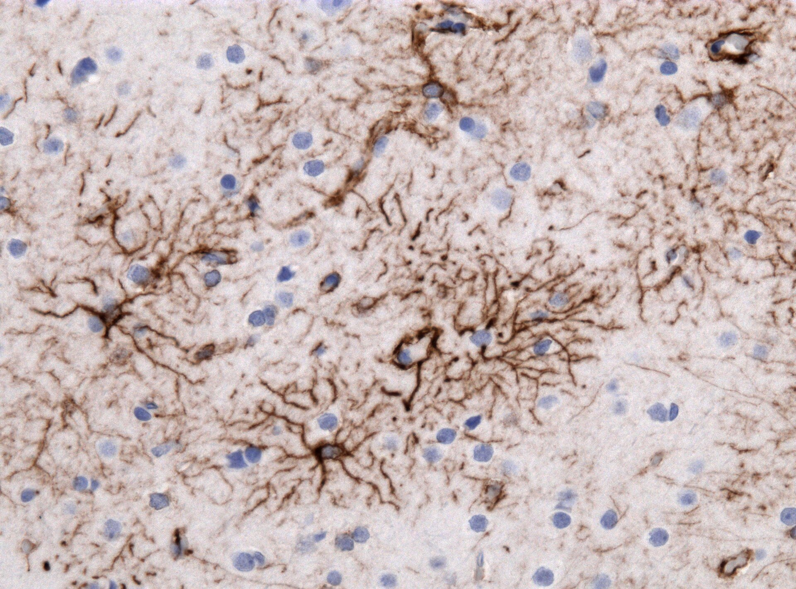
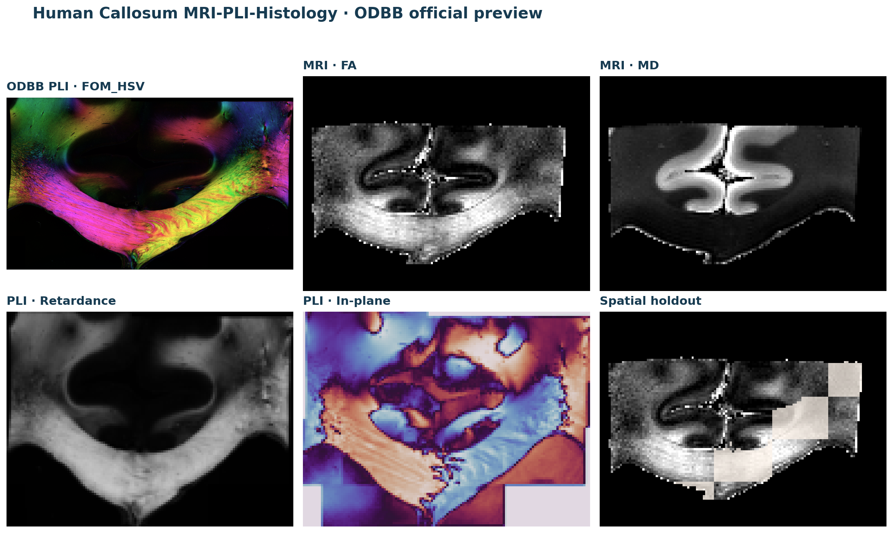
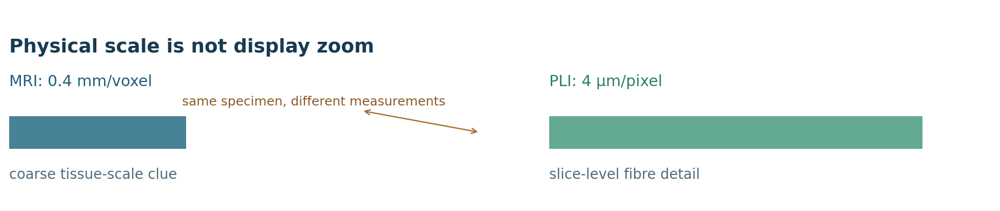
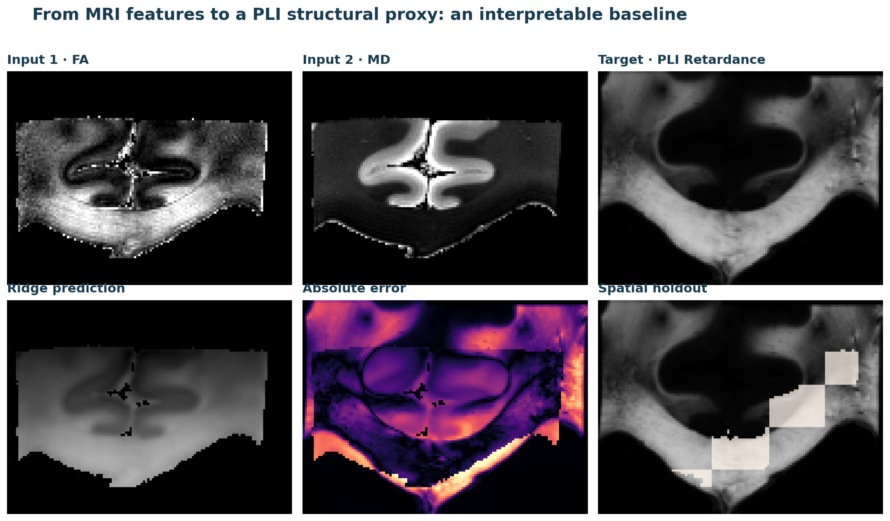
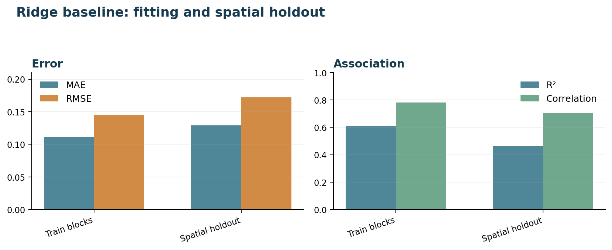

dMRI 与 IHC 图像分析
本页先把任务缩小为一个可以逐步检查的跨模态问题：用 ODBB 官方胼胝体预览样本中的 dMRI 特征，估计同一预览样本的 PLI Retardance 结构图。IHC 图用于认识免疫染色外观，不作为这次配对建模的目标。
1. 免疫组织化学的观察对象
GFAP 常用于观察星形胶质细胞相关结构，PLP 常用于观察髓鞘和少突胶质细胞相关结构。DAB 显色通常形成棕色沉淀，苏木精复染提供蓝紫色的细胞核背景。阅读图像时要把“看到了棕色”与“测得了蛋白含量”分开。

2. dMRI 的扩散信息
FA（fractional anisotropy）描述扩散方向性，MD（mean diffusivity）描述平均扩散程度。白质纤维排列、细胞密度、水分、纤维交叉和部分容积都会影响这些数值；一个体素可以混合多个组织成分。
ODBB 预览中的 MRI 原始数据包含 128×96×10×248 的扩散加权数组，体素尺寸为 0.4 mm。实践使用官方已经计算好的 FA、MD 和脑组织掩膜，先观察参数图的空间结构，再讨论模型。
| 字段 | 含义 | 阅读边界 |
|---|---|---|
| FA | 扩散方向性 | 受纤维交叉、噪声和部分容积影响 |
| MD | 平均扩散程度 | 受水分、组织成分和扫描参数影响 |
| mri_mask | 当前切片的 MRI 有效区域 | 用于排除视野外空白，不是组织学真值 |
3. PLI 的纤维结构信息
ODBB 的 PLI 预览包含 FOM_HSV、In-plane、Retardance 和 Transmittance。Retardance 可以作为一个连续结构目标，In-plane 记录平面内方向信息，FOM_HSV 把方向和强度编码成彩色图。这里不把 PLI 颜色直接改称为 IHC。

1.00×：完整图像；放大只改变显示范围，不增加数据中的细节。
同一张官方 ODBB 预览图的局部观察；显示放大不增加 MRI/PLI 的物理分辨率。

ODBB 官网描述这套预览数据包含一个胼胝体对象的 MRI、PLI 和组织学相关数据。当前轻量包下载并整理了 MRI/PLI 文件，用于可复查的教学网格；网页不会把未经配准的不同像素直接当作逐像素真值。
4. 官方数据到教学网格
真实数据进入模型前，需要先记录原始 shape、体素或像素尺寸、方向、切片选择和掩膜。为了让初学者能在普通电脑上逐数组观察，当前练习从 ODBB 预览体数据取一个显示切片，并将 PLI 图像缩放到 96×128 的教学网格。
| 数组 | 实践字段 | 用途 |
|---|---|---|
| 扩散参数 | mri_fa、mri_md、mri_s0 | 输入特征和显示检查 |
| 组织范围 | mri_mask | 排除 MRI 视野外空白 |
| PLI 目标 | pli_retardance | 连续结构目标，不是 IHC |
| 位置字段 | x_coordinate、y_coordinate | 提供粗略片内布局线索 |
| 划分字段 | train_mask、test_mask | 空间块留出检查 |
5. 透明的 MRI→PLI 基线
模型输入是 FA、MD 以及归一化的片内横纵坐标，目标是同一教学网格上的 PLI Retardance。标准化让不同量纲的特征处在可比较的数值范围；岭回归在平方误差基础上加入参数惩罚，避免少量相关特征把系数推得过大。
预测后使用 sigma=1 的高斯平滑，只为减少单像素噪声，让结构图更容易阅读。平滑不是新信息，也不能把低分辨率输入变成真正的细胞级 IHC。

α=3
6. 空间留出与指标
如果把相邻像素随机打散，训练和测试可能共享相同的局部结构。当前数据使用 5×5 空间块模式留出一部分像素；这种检查仍只发生在一个预览对象内，不能替代受试者级验证。
| 集合 | 像素数 | MAE | RMSE | R² | 相关系数 |
|---|---|---|---|---|---|
| 训练块 | 2,801 | 0.1116 | 0.1450 | 0.6086 | 0.7804 |
| 空间留出 | 1,097 | 0.1292 | 0.1719 | 0.4634 | 0.7033 |

MAE 和 RMSE 描述数值误差，R² 和相关系数描述预测与目标的关系。它们都只针对 PLI Retardance 教学目标；不能据此推出 GFAP/PLP 蛋白定位、IHC 染色质量或临床诊断能力。
7. 结果解释与模型边界
在一个 ODBB 预览对象、一个显示切片和一个教学网格上，MRI 参数与 PLI Retardance 是否存在可观察的粗尺度关系。
模型能否预测单个 GFAP/PLP 细胞、能否跨受试者泛化、能否替代真实 IHC 或支持临床判断。
坐标特征会帮助模型记住片内大致布局，因此结果中存在空间先验。评价时必须保留空间留出图，并把“模型学到的结构线索”和“输入本身没有提供的细节”分开。
如果未来加入 ODBB 的更多对象、真实组织学图或正式配准，应先重新定义配对关系和独立划分，再比较更复杂的模型。进阶内容会讨论当前的 TriSCoV-Net、多模态条件融合和多尺度损失，但不把本页的 Ridge 数值与论文输出直接横向比较。
8. 实践项目：dMRI 与 IHC 图像分析
odbb_simplified.npz 和来源清单，打印数组 shape、范围、切片和掩膜比例，绘制 FA、MD、PLI Retardance。资料来源与延伸阅读
这些链接分别用于核对官方数据、IHC 示例图和跨模态研究背景。
- ODBB：Human Callosum MRI-PLI-Histology：本页 MRI/PLI 官方预览数据和参数来源。
- Oxford Digital Brain Bank：数据项目背景。
- GFAP IHC 示例图（Wikimedia Commons）：独立的免疫染色外观示例，CC BY-SA 4.0。
- Mollink et al., NeuroImage 2017：ODBB 相关 MRI、组织学和 PLI 比较研究背景。
当前教学包只把 ODBB MRI/PLI 派生网格作为可运行输入；论文图块、差异图和棕色面积代理已从活动数据目录移出，保留在进阶的结果审查材料中。